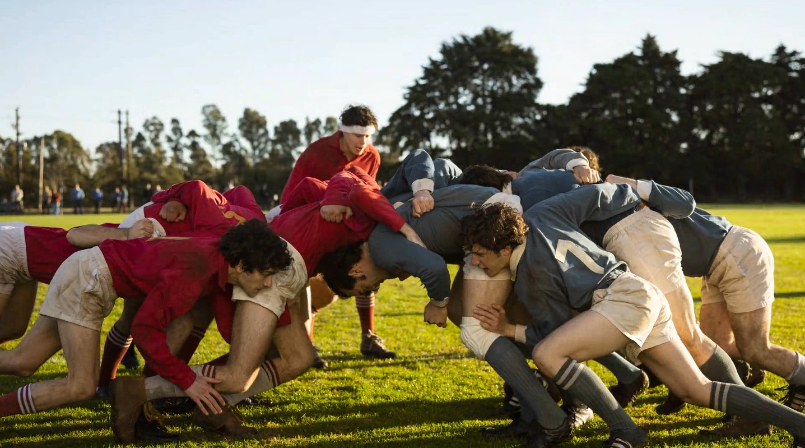
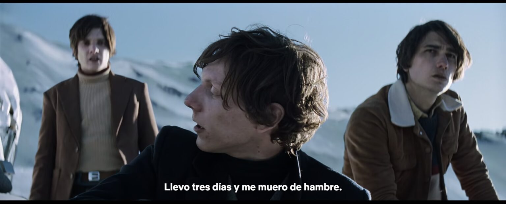

Introducción al contexto y situación inicial.
Algunos lo llaman tragedia, otros milagro. ¿Pero qué sucedió en realidad? ¿Qué pasa cuando el mundo te abandona? Cuando no tienes ropa y el frío te cala los huesos. Cuando no tienes comida y el hambre te consume. En octubre de 1972 en Montevideo, Uruguay, el equipo de Rugby All Christians Club está en pleno juego. Roberto Canessa, intentando ser el héroe, ignora los pedidos de sus compañeros de pasar el balón y termina siendo derribado por el equipo contrario. Tras el partido, sus compañeros lo reprenden lanzándole ropa sucia hasta que Marcelo Pérez del Castillo, el capitán, calma a todos recordándoles que necesitan reunir dinero para su próximo partido en Santiago de Chile. Para costear el vuelo, empiezan a invitar amigos y conocidos. Gastón Costemaye, durante una misa, pasa una nota a Numa Turcati, quien, aunque no juega rugby, es invitado a unirse al viaje.
Accidente de avión en la cordillera de los Andes.
El vuelo despega con 40 pasajeros y 5 tripulantes, lleno de risas y buen ánimo. Incluso cuando atraviesan la cordillera de los Andes, se topan con turbulencias, pero nadie se inquieta demasiado. Sin embargo, al aproximarse al aterrizaje, una ola de turbulencias agita el avión. La cola impacta contra la montaña, expulsando a los pasajeros de atrás, incluido Gastón. El resto del avión logra un aterrizaje forzoso en la nieve, deslizándose y desmantelándose hasta detenerse."
.png)
.png)
Desafíos y adversidades enfrentadas por los supervivientes.
La primera noche, con la temperatura cayendo 30 grados, los sobrevivientes usan maletas para bloquear la entrada y tratar de conservar algo de calor, aunque el frío es implacable. Avanzan hasta que su avión es invisible en el vasto blanco. Se detienen un momento para descansar, pero al escuchar el imponente estruendo de una avalancha cercana, deciden regresar al furgón. Al sexto día, sin comida, Numa explora las rocas cercanas en busca de alimento, pero sin éxito. Por otro lado, Fito menciona que Nando dijo que estaba dispuesto a comer cadáveres antes que morir de hambre.
.png)
Apofagia y dilemas morales
los supervivientes se enfrentan a una encrucijada desgarradora. Después de días sin comida y con la esperanza de rescate desvaneciéndose, surge la discusión sobre la posibilidad de consumir los cuerpos de los fallecidos para mantenerse con vida. Este debate plantea dilemas morales y éticos profundos, ya que los supervivientes se ven obligados a cuestionar sus principios y valores fundamentales en un contexto extremo de supervivencia. La decisión de recurrir al canibalismo representa un giro impactante en la historia, donde la lucha por la vida confronta directamente las normas sociales y culturales convencionales, llevando a los supervivientes a enfrentarse a una realidad desgarradora y a tomar decisiones impensables en circunstancias normales.
La difícil decisión de recurrir al canibalismo para sobrevivir.
En el noveno día, Fito declara que si fallece, autoriza el uso de su cuerpo como alimento. Roberto y otros expresan lo mismo. Impulsados por esta resolución, Fito y su primo Eduardo toman la drástica decisión de salir y preparar los cuerpos de los fallecidos para consumirlos. Uno a uno empiezan a superar sus escrúpulos morales y se unen en el acto de supervivencia. Incluso Pancho, dejando a Numa a un lado, cede ante la necesidad. Solo Marcelo, Numa y otros cuantos se abstienen. Aquí estamos viendo un claro ejemplo del proceso de cómo emergen nuevas normas sociales dentro de un grupo o sociedad. Las normas sociales son reglas no escritas que emergen de la interacción entre los miembros de un grupo y que guían comportamientos, actitudes y percepciones dentro de él. Al día siguiente, Fito y sus primos Eduardo y Daniel asumen la tarea indeseable. Preparan la carne en secreto, protegiendo a los demás del proceso para suavizar el impacto psicológico, facilitando que coman sin ver su procedencia ni sentir culpa.
Los desafíos psicológicos y éticos que enfrentan los supervivientes.
En medio de la crisis, Coco halla una radio en un maletín y la activan con una antena improvisada. Mientras, Pancho ofrece carne a Numa, cubierta de nieve, para facilitar su aceptación, pero Numa la rechaza, por no considerar lo correcto. Su diálogo se ve interrumpido por gritos de angustia, al enterarse de que las autoridades han suspendido la búsqueda hasta el próximo año, esperando mejor visibilidad tras el deshielo. La desesperación domina al grupo. Mientras algunos gritan o intentan escapar frenéticamente, otros más lúcidos los contienen. Marcelo se disculpa por la espera infructuosa e insta a los reacios a comer para sobrevivir. Aquí estamos viendo cómo el liderazgo en un grupo puede cambiar drásticamente ante nuevas circunstancias, especialmente, en situaciones críticas. Inicialmente, Marcelo el capitán lideró, motivando a los sobrevivientes y organizando recursos y tareas. Pero ante el anuncio de la suspensión de la búsqueda, Marcelo se aleja discretamente de su rol. Según las memorias de 2016 del superviviente Pedro Algorta, Marcelo había sido un líder eficaz en un contexto familiar, dirigiendo al equipo contra otros equipos de rugby en entornos conocidos. Pero tras el accidente, todo cambió. El adversario ya no era otro equipo, sino algo completamente nuevo y sin precedentes. La montaña, la nieve, el hambre, y el frío. Un escenario para el cual la experiencia previa de Marcelo y su autoridad ya no eran aplicables.
.png)
Liderazgo y resiliencia
Inicialmente, Marcelo lidera con determinación y motivación, manteniendo la esperanza del grupo y organizando recursos y tareas. Sin embargo, conforme la situación se vuelve más desafiante y la perspectiva de rescate se aleja, Marcelo se enfrenta a una nueva realidad. Su liderazgo se ve desafiado por la imprevisibilidad de la situación y la falta de recursos. A pesar de sus esfuerzos iniciales, Marcelo se ve obligado a ceder discretamente su rol de líder, reconociendo la necesidad de adaptarse a las nuevas circunstancias y permitiendo que otros asuman roles de liderazgo emergentes. Este cambio ilustra la resiliencia de Marcelo y su capacidad para adaptarse a situaciones cambiantes, así como la importancia de la flexibilidad y la colaboración en tiempos de crisis.
.png)
El surgimiento de líderes inesperados dentro del grupo.
Tras la muerte de Marcelo, Nando, determinado en buscar ayuda, se convirtió en líder sin quererlo. En sus memorias reveló que nunca antes había liderado y se veía más como alguien que seguía más que guiaba. Admitió sentirse confundido, aterrado y convencido de que estaban condenados, pero aunque él no se consideraba un líder y aunque enfrentaba sus propias dudas y miedos, su inquebrantable voluntad de encontrar una salida inspiró a otros a verlo. Como tal, motivándolos a perseverar, como lo expresó Numa al verlo entrenar diariamente.
.png)
La importancia del compromiso y la perseverancia en momentos de crisis.
El ser humano tiene la peculiaridad de que no puede vivir si no mira al futuro, y esto constituye su salvación en los momentos más difíciles de su existencia. El ser humano está dispuesto a sufrir a condición de que sirva para algo. Aquí Javier demuestra una comprensión profunda de una idea sugerida por Victor Frank, quien en medio de la desolación y sufrimiento, sostuvo que el amor es la meta última y más alta a la que puede aspirar el ser humano. Frank argumenta que la salvación del ser humano se encuentra en el amor y a través del amor, incluso cuando todo lo demás ha sido arrebatado.
.png)
Amor, sacrificio y sentido de la vida
vemos cómo los sobrevivientes, a pesar de las circunstancias extremas, encuentran motivación en el amor y la solidaridad. Se destaca el sacrificio de Numa, quien acepta su destino con paz y felicidad, reconociendo que su muerte beneficiaría la supervivencia de sus amigos. Este acto encarna la idea de que el amor implica un esfuerzo activo por beneficiar a otros, mostrando que incluso en situaciones desesperadas, el amor puede dar significado y propósito a la vida.
.png)
La idea de sacrificar la propia vida por el bienestar de los demás
Numa, al decidir quedarse solo en el fuselaje y permitir que sus amigos utilicen su cuerpo para sobrevivir, representa el máximo acto de amor y sacrificio. Su disposición a dar su vida por el bienestar de los demás muestra cómo el amor puede impulsar a las personas a realizar sacrificios extraordinarios, incluso en las situaciones más adversas.
.png)
La búsqueda de sentido en el sufrimiento y la muerte
La película nos invita a reflexionar sobre el sentido del sufrimiento y la muerte a través de las experiencias de los sobrevivientes. Numa, al cuestionar el sentido de las muertes y encontrar consuelo en la idea de honrar el sacrificio de los demás, muestra cómo el sufrimiento puede llevar a las personas a buscar un propósito más grande y a encontrar significado incluso en las circunstancias más difíciles.
.png)
La importancia del amor y la solidaridad en tiempos difíciles
A lo largo de la historia, se resalta la importancia del amor y la solidaridad como fuerzas motrices que impulsan a los sobrevivientes a perseverar y a apoyarse mutuamente en momentos de gran adversidad. Desde la apofagia hasta la disposición de Numa de sacrificar su vida por el bienestar de sus amigos, vemos cómo el amor y la solidaridad son fundamentales para mantener la esperanza y la resiliencia en situaciones extremas.
.png)
Esperanza y resolucion
A pesar del agotamiento y la desesperación que los rodean, una chispa de esperanza comienza a arder en cada uno de ellos. Se aferran a la idea de que cada obstáculo, cada desafío, está intrínsecamente ligado a un propósito mayor. La determinación de encontrar sentido en medio del caos se convierte en su brújula, guiándolos a través de la oscuridad de la incertidumbre. En ese momento, comprenden que la esperanza no es solo un anhelo vago, sino una fuerza poderosa que impulsa los corazones humanos más allá de los límites de lo imaginable. Con cada paso, con cada suspiro, se aferran a la creencia de que, al otro lado de ese muro de hielo, aguarda la promesa de un nuevo comienzo, de una vida renovada y redimida. Es esta esperanza, esta resolución inquebrantable, la que los impulsa a enfrentar los desafíos con valentía, sabiendo que cada paso los acerca un poco más a la luz al final del túnel.
.png)
La determinación de los supervivientes de encontrar ayuda y sobrevivir
Al prepararse para partir, toman provisiones del cuerpo de Numa y se despiden del resto, a quienes Nando da permiso para usar los cuerpos de su madre y hermana. Sin más, Nando, Roberto y Tintín inician su ascenso. Ante la caída de la noche, caban una cueva para protegerse del frío, aunque sigue siendo un desastre. Una noche dura. Al amanecer, continúan su camino y al alcanzar la cima, descubren un sinfín de montañas en el horizonte. A pesar del desánimo de Roberto, Nando admira la belleza del paisaje y afirma que no planea volver, creyendo que tras las montañas encontrarán Chile en unos 12 días.
.png)
La superación de obstáculos y la búsqueda de ayuda.
La avalancha sería un punto de inflexión para el grupo, siendo literal y metafóricamente un renacimiento. Coche Inciarte, uno de los sobrevivientes, describe este momento como un renacer que inició una era de decisiones más inteligentes y el surgimiento de líderes que, por su disposición a servir y por trabajar más y mejor, guiarían al resto de los sobrevivientes. Dentro del fuselaje, el herido Arturo Nogueria, que está postrado, anima a Numa a conservar energía para sí. Numa insta a Arturo a no perderse y a perder la fe, a lo que él responde con una fe más fuerte que nunca.
.png)
Éxito del rescate y reflexiones finales
El rescate exitoso de los supervivientes, liderado por Nando y Roberto, es un momento de triunfo en medio de la adversidad. Su valentía y determinación los llevan finalmente a Chile, superando desafíos inimaginables. Mientras tanto, las reflexiones finales sobre el significado de la vida invitan a contemplar el propósito y la responsabilidad individual de crear sentido en medio de la tragedia. Estas reflexiones profundas nos recuerdan el poder transformador del amor y la solidaridad, inspirando a vivir con propósito y significado, incluso en las circunstancias más difíciles.
.png)
El rescate exitoso de los supervivientes
Los helicópteros de rescate guiados por Nando llegan a donde están los demás quienes saltan y gritan de alegría. Al subir al helicóptero hay un problema con el peso y el copiloto ordena a Gustavo dejar la baleta con las pertenencias de los fallecidos, pero éste se niega a abandonar. Y prefiere quedarse en la nieve. Finalmente, el piloto le permite llevarla y despegan, dejando atrás el fuselaje que había sido su hogar durante 70 días.
.png)
Reflexiones sobre el significado de la vida y la responsabilidad individual de crear sentido
Para concluir quiero reflexionar sobre una pregunta que abrumó a varios en la película y que a muchos de nosotros también suele angustiarnos en momentos de gran sufrimiento. ¿Tienen algún sentido el sufrimiento y las muertes? Nos preguntamos esto preocupados de que si carecen de sentido, entonces la propia supervivencia pierde valor. Si la vida se reduce a superar obstáculos, o sucumbir ante ellos, dejando su significado al azar, quizás no merezca la pena vivir. Pero esta perspectiva cambia cuando comprendemos que cada experiencia desafía al ser humano a encontrar su propio significado. La vida no debería ser una búsqueda pasiva de sentido, sino una invitación a crearlo. Quizás en vez de preguntarnos el sentido de la vida, deberíamos ver que la vida nos hace la pregunta directamente a cada uno de nosotros, y la respuesta somos nosotros mismos. El significado de la vida es más sobre ser que de buscar. Y ser el sentido, significa asumir responsabilidad por nuestra vida, mejorarnos a nosotros mismos, cuidar de los demás, y contribuir a hacer del mundo un lugar mejor.
.png)
.png)
.png)